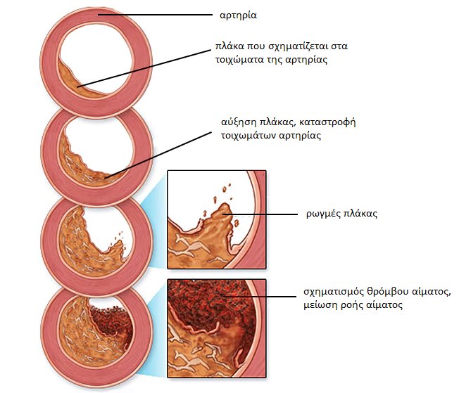

Как лечат высокое кровяное давление в Швейцарии. Швейцарский кардиолог с испанскими корнями дал интервью местному телевидению.
Dr. Josep Brugada es el presidente del Centro de Cardiología Clínica de Ginebra.
Хосеп Бругада: "Гипертонию в Испании до сих пор лечат устаревшими и бесполезными препаратами". Жозеп Бругада приехал в Мадрид, чтобы поделиться своим опытом с коллегами и посмотреть, как лечат гипертонию в нашей стране. В Испании медицина все еще отстает от остальной Европы.
После интервью на телевидении доктор Жозеп Бругада согласился ответить на наши вопросы и дать свои рекомендации. Доктор рассказал, в чем проблема нашей медицины, и заявил, что больные гипертонией в нашей стране никогда не выздоровеют.
В интервью журналистам он говорил об ужасных проблемах нашей медицины, услышав это, мы были очень удивлены. Можете ли вы прокомментировать это?
Я не хочу никого обидеть, я уважаю эту страну и ее народ, но я хочу повторить то, что уже говорил. Масштабы проблемы пугают, но почему-то все закрывают на это глаза. Медицина в Испании находится на том же уровне, что и 20 или 30 лет назад. По крайней мере, я имею в виду лечение сердечных заболеваний и высокого кровяного давления.
Просто послушайте, что рекомендуют врачи для лечения высокого кровяного давления в Испании: лизиноприл, амлодипин, хлортаклид, эналаприл, валсартан и другие подобные препараты.
Эти препараты не лечат высокое кровяное давление, а лишь временно снижают его. А теперь представьте, что происходит с нашим организмом после приема таких сильных лекарств. Пациент принимает лекарство, его давление снижается. Однако через некоторое время давление снова повышается. Такие изменения наносят организму больший вред, чем стабильно высокое давление. Кровеносные сосуды разрушаются очень быстро, и возникает риск сердечного приступа или инсульта.
В Швейцарии этот метод лечения гипертонии не используется уже более 20 лет. А врачи назначают таблетки для снижения артериального давления в редких случаях, и такие препараты нельзя принимать каждый день! В Швейцарии такие сильные аналоги лекарств продаются только по рецепту, и пациента предупреждают обо всех рисках приема таких препаратов.
А наши врачи и фармацевты убивают людей! Понятно, что постоянная продажа дорогих лекарств более выгодна, чем если бы пациент купил лекарство и навсегда вылечился от гипертонии. Это не выгодно фармацевтическим компаниям. Конечно, это ужасно.
Как лечат высокое кровяное давление в Швейцарии?
Швейцарские ученые давно выяснили, что необходимо устранять причины высокого кровяного давления, а не бороться с симптомами. Это ключ к полному и безопасному лечению. Что является основной причиной высокого кровяного давления? Сужение просвета кровеносных сосудов! Возрастная гипертония возникает у человека с течением времени и встречается в 96% всех случаев. Современная швейцарская медицина лечит этот вид гипертонии.
Представьте себе, что сосуды - это трубы. Стенки труб загрязнены, через них труднее пропускать воду. Однако вода должна течь и проходить по трубам в достаточном количестве. Что нужно сделать, чтобы вода текла успешно? Правильно, увеличить давление. Именно это и делает сердце. А это приводит к повышению кровяного давления, что означает быстрое увеличение сердечной мышцы. Но швейцарские ученые придумали другой метод: очистить сосуды от загрязнения. Вот как лечат гипертонию в Швейцарии.
В 800 году лекари начали использовать специальный отвар, приготовленный из редких лекарственных трав. Эти травы снижают уровень холестерина, в результате сосуды очищаются, кровообращение нормализуется и давление приходит в норму. Этот метод помогал много лет назад и помогает сейчас. Лекарственные травы - единственный надежный способ держать кровяное давление под контролем. Для снижения артериального давления больше не нужны лекарства. Очистив сосуды таким способом, вы перестанете бояться, что высокое давление разрушит внутренние органы. Люди могут выздоравливать.
Когда я увидел медицинскую статистику в Испании, я был потрясен. В Испании большое количество смертей (миллионы людей умирают каждый год от инфарктов и инсультов), но это не рак, не СПИД, это высокое кровяное давление! 80% больных гипертонией не доживают до 60 лет!
В Швейцарии, однако, возрастная гипертония и высокое кровяное давление не считаются опасным заболеванием. Повышение артериального давления свидетельствует лишь о том, что сосуды загрязнены и нуждаются в очистке. После этого давление перестает повышаться, и человек продолжает жить нормальной, здоровой жизнью.
Как очищают кровеносные сосуды в Швейцарии?
Сегодня существуют специализированные препараты, предназначенные для очищения кровеносных сосудов от холестерина. Лучшим из них является Cardiofort. Этот продукт не содержит никаких химических веществ. Продукт на 100% натуральный и содержит редкие целебные экстракты трав и ягод: хмеля, пустырника, облепихи, оливы, фортунеллы. Именно поэтому он так полезен для организма.
В состав Cardiofort входит более 40 компонентов. Я не буду перечислять их все, назову лишь некоторые.
| Экстракт хмеля. | Снижает кровяное давление естественным образом. Предотвращает накопление солей натрия в клетках и кровеносных сосудах. |
| Экстракт оливы. | Выводит токсины из кровеносных сосудов. |
| Экстракт пустырника. | Очищает кровеносные сосуды от холестерина. Рапсовое масла. Повышает содержание кислорода в крови. Расширяет кровеносные сосуды, снижает артериальное давление сразу после приема капель. |
| Фортунелла. | Питает и тонизирует. |
Продается ли это средство в аптеках Испании?
Нет, и это главная проблема. Наши врачи предпочитают кормить людей таблетками от давления, вместо того чтобы лечить гипертонию.
Насколько я знаю, производители Cardiofort хотели выйти на испанский фармацевтический рынок, но бюрократия в Испании неотвратима, и производители пока не получили ответа. Но этому есть объяснение: если Cardiofort поступит в продажу в аптеки, фармацевтические компании понесут огромные убытки. Зачем покупать дорогие таблетки от давления, если можно вылечить гипертонию раз и навсегда и за разумную цену? К сожалению, фармакология сегодня - это бизнес! Даже в Европе.
Какой совет вы бы дали испанским пациентам с артериальной гипертензией?
Прежде всего, не отчаивайтесь. Выход есть. Мы заключили соглашение с испанским институтом кардиологии, который, и будем продавать Cardiofort всем испанцам, страдающим от гипертонии по сниженной цене.
Сейчас я расскажу вам, что нужно сделать, чтобы заказать Cardiofort по сниженной цене:
- Заполните форму заказа на этом сайте.
- После этого специалист свяжется с вами для подтверждения адреса доставки.
Вы сможете получить Cardiofort с доставкой на дом в течение 1-3 дней, оплата производится после получения посылки.
Мы публикуем результаты опроса, проведенного среди тех, кто тестировал Cardiofort. Производитель попросил всех, кто купил этот продукт, принять участие в опросе и помочь выяснить, помог ли Cardiofort улучшить их самочувствие. В настоящее время в опросе уже приняли участие около 5 000 человек.
Результаты обследования пациентов, проходящих курс лечения:
- Артериальное давление полностью стабилизировалось - гипертония излечена: 98% респондентов;
- Пульс пришел в норму: 97% респондентов;
- Головные боли исчезли: 99% респондентов;
- Улучшилось зрение: 74% респондентов;
- Состояние здоровья улучшилось: 99% респондентов;
Как видите, Cardiofort помог многим испанцам избавиться от смертельной болезни всего за несколько курсов лечения.
Как долго Cardiofort будет доступен по сниженной цене?
Институт будет распространять Cardiofort по сниженной цене до тех пор, пока сохраняются запасы. Хочу предупредить вас, что осталось очень мало упаковок Cardiofort. Люди быстро замечают эффективность этого препарата по сравнению с другими дорогими таблетками и заказывают Cardiofort в больших количествах.
Чистые кровеносные сосуды - залог здоровья.


Чтобы получить "Cardiofort" по сниженной цене, введите свое имя и номер телефона и нажмите "Заказать сейчас". Специалист свяжется с вами и расскажет все подробности.